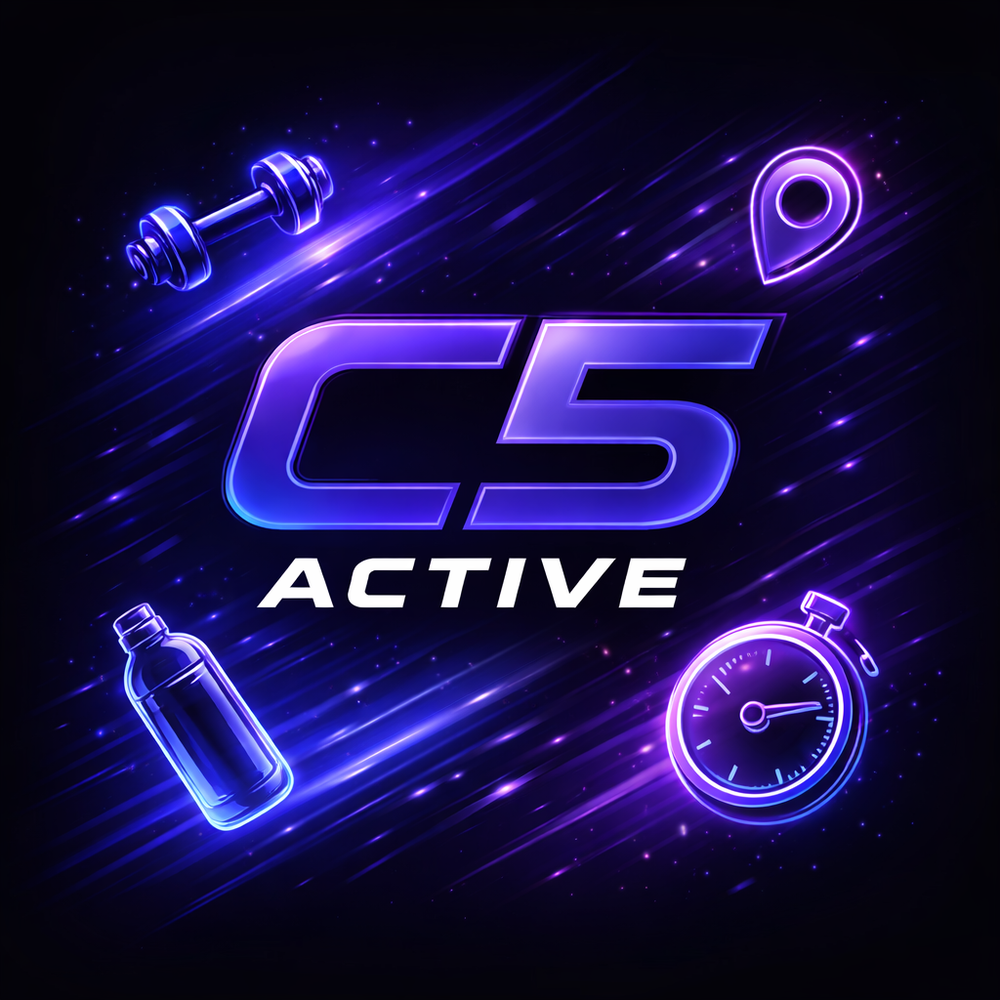

Map Reliability
Improve gym data coverage, search quality, and map rendering stability.

C5 ActiveProduct Roadmap
Current roadmap priorities are focused on launch readiness, stronger retention loops, and a cleaner product experience from discovery through accountability.
Improve gym data coverage, search quality, and map rendering stability.
Continue refining inbox and profile actions for cleaner communication flow.
Tighten profile setup so matching quality is stronger from day one.
Run focused feedback cycles with early users and tighten the most important product surfaces.
Improve the accountability loop so discovery, messaging, and check-ins work together more naturally.
Launch with stronger monitoring, better support workflows, and a cleaner first-user experience.
Expand thoughtfully based on user behavior, demand, and the strongest signals from real usage.
Explore a guided product walkthrough that shows how C5 Active handles onboarding, discovery, matching, messaging, and accountability in one polished flow.